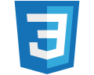
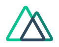
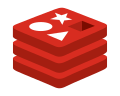
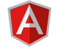
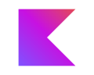
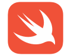
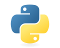

Resolvemos problemas de negocio, no vendemos herramientas.
Quick Solutions para una necesidad concreta, Business Solutions para procesos integrados y Enterprise Solutions para un programa de negocio completo.
Quick Solutions
Servicios de alcance acotado en tres familias. Elija una variante tecnológica y revise sus entregables.
Open source describe el software; AWS, Azure y Google Cloud describen alternativas de servicios o despliegue. Un stack abierto también puede alojarse en una nube comercial.
Software y aplicaciones
Q01Software Engineering
Landing page
Presentación de un producto, servicio o campaña con una acción principal.
Opciones de implementación

HTML + CSS + JavaScript (Tailwind y Vite opcionales)
Captación con una página directa
Una landing para presentar su oferta y llevar al visitante a consultar o registrarse. HTML estructura el contenido, CSS define el diseño y JavaScript añade interacciones.
Astro + TypeScript + Tailwind
Contenido rápido y fácil de ampliar
Astro organiza las secciones, TypeScript ayuda a mantener el código y Tailwind unifica el diseño. Adecuado para campañas y contenido con pocas funciones de aplicación.
El stack y el despliegue se eligen según sus sistemas, presupuesto y requisitos. Los ejemplos no implican que todas las tecnologías sean necesarias.
Destinos y experiencias organizados en fichas reutilizables.
Opciones de implementación
Astro + TypeScript (Tailwind opcional)
Muestre destinos y reciba consultas
Organice destinos, experiencias, itinerarios y formularios en módulos reutilizables. Astro publica el contenido; TypeScript permite mantener sus interacciones.
El stack y el despliegue se eligen según sus sistemas, presupuesto y requisitos. Los ejemplos no implican que todas las tecnologías sean necesarias.
Ver entregables
Catálogo de destinos y experiencias
Ficha por destino
Contacto; sin reservas ni pagos en el alcance inicial
Información de la organización, sus servicios y canales de contacto.
Opciones de implementación
Next.js + TypeScript + MDX
Una web preparada para crecer
Next.js organiza páginas y funciones; MDX permite combinar contenido editorial con componentes. Para una institución que prevé nuevas secciones e integraciones.

Nuxt + Vue + Nuxt Content
Contenido institucional con Vue
Nuxt resuelve la estructura de la web y Nuxt Content organiza sus textos. Para equipos que prefieren Vue y una publicación de contenido basada en archivos.
El stack y el despliegue se eligen según sus sistemas, presupuesto y requisitos. Los ejemplos no implican que todas las tecnologías sean necesarias.
Servicios o productos presentados en un catálogo navegable.
Opciones de implementación
Astro + TypeScript + Tailwind
Su catálogo disponible en una web clara
Astro presenta servicios o productos por categoría; TypeScript y Tailwind mantienen filtros, diseño y componentes. La compra en línea se incorpora solo si forma parte del alcance.
El stack y el despliegue se eligen según sus sistemas, presupuesto y requisitos. Los ejemplos no implican que todas las tecnologías sean necesarias.
Sitio cuyo contenido puede actualizarse desde un gestor.
Opciones de implementación
WordPress + PHP
Edite contenidos desde un panel
WordPress permite actualizar páginas y publicaciones sin editar código. PHP soporta el CMS; se seleccionan tema y extensiones según las funciones necesarias.
Next.js + Strapi + PostgreSQL
Contenido separado de la aplicación
Strapi ofrece el panel editorial, Next.js presenta la web y PostgreSQL guarda el contenido. Útil cuando el mismo contenido debe alimentar varias experiencias.
El stack y el despliegue se eligen según sus sistemas, presupuesto y requisitos. Los ejemplos no implican que todas las tecnologías sean necesarias.
Catálogo, pedidos y pagos para vender por internet.
Opciones de implementación
Next.js + Prisma + PostgreSQL + pagos locales
Compra a medida con pagos locales
Next.js resuelve la tienda, Prisma conecta los datos y PostgreSQL registra productos y pedidos. La pasarela local se elige y valida por separado.

Medusa + Next.js + PostgreSQL + Redis
Comercio con un backend extensible
Medusa gestiona operaciones de comercio y Next.js la experiencia del comprador. PostgreSQL y Redis apoyan datos y procesos según la configuración.
Shopify + Liquid
Tienda sobre una plataforma administrada
Shopify aporta el panel comercial y Liquid personaliza la plantilla. Adecuado para concentrarse en catálogo y ventas; plan, aplicaciones y comisiones se acuerdan aparte.
WordPress + WooCommerce
Venda desde su sitio WordPress
WooCommerce añade catálogo, carrito y pedidos al CMS. La pasarela, el alojamiento y las extensiones se eligen según la operación de la tienda.
El stack y el despliegue se eligen según sus sistemas, presupuesto y requisitos. Los ejemplos no implican que todas las tecnologías sean necesarias.
Una aplicación para resolver un proceso concreto del negocio.
Opciones de implementación
Next.js + Supabase
Portal con usuarios y datos conectados
Next.js construye la aplicación; Supabase aporta servicios de autenticación y datos. Para un proceso delimitado con formularios, permisos y registros.
React + FastAPI + PostgreSQL
Interfaz y API con responsabilidades claras
React presenta el flujo de trabajo, FastAPI expone la lógica del proceso y PostgreSQL conserva los registros. Permite integrar otras aplicaciones por API.
Laravel + Vue + Inertia
Gestión interna con reglas de negocio
Laravel concentra validaciones y procesos; Vue e Inertia construyen la interfaz. Para formularios, aprobaciones y operaciones de un equipo.

Angular + NestJS + PostgreSQL
Aplicación con estructura modular
Angular organiza la interfaz, NestJS la API y PostgreSQL los datos. Una alternativa para equipos que requieren módulos y contratos de integración definidos.
El stack y el despliegue se eligen según sus sistemas, presupuesto y requisitos. Los ejemplos no implican que todas las tecnologías sean necesarias.
Flutter construye la interfaz móvil y Firebase aporta servicios según la necesidad, como autenticación y notificaciones. Las funciones de cada sistema se revisan al definir el alcance.
React Native / Expo + Supabase
Experiencia móvil con React
React Native y Expo organizan la aplicación; Supabase conecta usuarios y registros. Para equipos que quieren trabajar con TypeScript y componentes React.

Kotlin + Jetpack Compose
Aplicación enfocada en Android
Kotlin y Jetpack Compose permiten construir pantallas e integraciones propias de Android. El backend se elige según los datos y servicios requeridos.

Swift + SwiftUI
Aplicación enfocada en iPhone
Swift y SwiftUI permiten construir la experiencia nativa de iOS. Datos, autenticación y publicación se definen según el alcance.
El stack y el despliegue se eligen según sus sistemas, presupuesto y requisitos. Los ejemplos no implican que todas las tecnologías sean necesarias.
Herramienta específica para un proceso de su organización.
Opciones de implementación
Java + Spring Boot + React
Procesos empresariales con Java
Spring Boot organiza la API y las reglas de negocio; React presenta las pantallas. Para integrar un proceso con sistemas que ya utilizan Java.
.NET + Blazor
Solución dentro del ecosistema .NET
.NET implementa la lógica y Blazor las interfaces en C#. Útil cuando el equipo y sus integraciones ya trabajan con tecnología Microsoft.
Go + HTMX + PostgreSQL
Servidor y pantallas con una estructura simple
Go ejecuta el servicio, HTMX actualiza partes de la pantalla y PostgreSQL guarda los datos. Para herramientas enfocadas en formularios y operaciones concretas.
Electron + React + SQLite
Herramienta de escritorio con datos locales
Electron empaqueta la aplicación, React construye las pantallas y SQLite almacena registros locales. Sincronización y acceso compartido se añaden solo si se necesitan.
El stack y el despliegue se eligen según sus sistemas, presupuesto y requisitos. Los ejemplos no implican que todas las tecnologías sean necesarias.
Aplicación interna sobre datos y herramientas existentes.
Opciones de implementación
AppSheet + Google Sheets
De una hoja de cálculo a una app interna
AppSheet crea formularios, vistas y reglas sobre Google Sheets. Para registrar visitas, solicitudes o inventario sin construir una aplicación completa desde cero.
El stack y el despliegue se eligen según sus sistemas, presupuesto y requisitos. Los ejemplos no implican que todas las tecnologías sean necesarias.
Una web y un agente que comparten datos y ejecutan un recorrido definido.
Opciones de implementación
Next.js + TypeScript + FastAPI + LangGraph + SQLite local
Su proceso web con un agente integrado
Next.js muestra el espacio de trabajo; FastAPI y LangGraph coordinan herramientas y pasos del agente. SQLite sirve para una primera versión local; el despliegue productivo requiere revisar datos y permisos.
El stack y el despliegue se eligen según sus sistemas, presupuesto y requisitos. Los ejemplos no implican que todas las tecnologías sean necesarias.
Asistente para consultas o tareas acotadas, con un canal y herramientas definidos.
Opciones de implementación
Node.js + WhatsApp Cloud API + Claude
Atención desde WhatsApp
Node.js conecta la WhatsApp Cloud API con Claude para responder dentro de reglas acordadas. Se define cuándo derivar a una persona y qué información puede consultar.

Python + FastAPI + LangGraph + pgvector + React
Asistente con acceso a documentos y herramientas
React muestra la conversación; FastAPI y LangGraph coordinan la lógica. pgvector permite recuperar fragmentos relevantes de las fuentes autorizadas.
El stack y el despliegue se eligen según sus sistemas, presupuesto y requisitos. Los ejemplos no implican que todas las tecnologías sean necesarias.
Automatizaciones dentro del entorno de Google Workspace.
Opciones de implementación
Apps Script
Menos trabajo repetitivo en Workspace
Apps Script conecta hojas, formularios, correo y documentos. Para generar reportes, enviar avisos o mover información mediante reglas y horarios definidos.
El stack y el despliegue se eligen según sus sistemas, presupuesto y requisitos. Los ejemplos no implican que todas las tecnologías sean necesarias.
Un flujo repetible entre herramientas o fuentes de datos.
Opciones de implementación
n8n + integraciones
Flujos visibles entre sus herramientas
n8n conecta aplicaciones mediante nodos y reglas. Permite programar tareas, recibir eventos y gestionar pasos de aprobación; cada integración depende de su API.
Python + pandas/Polars + otras librerías
Archivos y datos procesados por código
Python, pandas o Polars limpian, cruzan y transforman información. Para tareas repetibles con archivos o tablas y reglas de validación explícitas.
El stack y el despliegue se eligen según sus sistemas, presupuesto y requisitos. Los ejemplos no implican que todas las tecnologías sean necesarias.
Indicadores y visualizaciones para un área o proceso.
Opciones de implementación
Power BI + Power Query + DAX
Indicadores para decidir con una misma versión
Power Query prepara datos, DAX define medidas y Power BI presenta el tablero. Fuentes, frecuencia de actualización y permisos se acuerdan antes de construir.
Looker Studio + BigQuery / Sheets
Reportes conectados al entorno Google
Looker Studio presenta indicadores desde BigQuery o Sheets. Para compartir reportes con filtros y métricas acordadas; las fuentes determinan actualización y costos.
El stack y el despliegue se eligen según sus sistemas, presupuesto y requisitos. Los ejemplos no implican que todas las tecnologías sean necesarias.
Soluciones empresariales integradas, en cinco especializaciones.
Soluciones para negocios pequeños, empresas medianas y organizaciones de mayor escala. Abra cada ficha para explorar alcances y alternativas tecnológicas; la elección depende de su proceso, sus sistemas y su presupuesto.
Core
Implementación inicial con alcance funcional definido.
Advanced
Integraciones, automatizaciones y mayor personalización.
Enterprise
Seguridad, gobierno, operación, escalabilidad y arquitectura adaptada a requisitos empresariales.
Core, Advanced y Enterprise describen la profundidad de la solución, no el tamaño obligatorio del cliente. Una empresa mediana también puede necesitar controles avanzados. Las tecnologías dentro de cada ficha son alternativas de referencia, no componentes obligatorios ni productos ya construidos.
AI Engineering · 6
C01AI Engineering
AI Assistant Platform
Asistentes inteligentes para clientes y empleados.
Problema que resuelve: Equipos que responden las mismas consultas una y otra vez, en varios canales.
CoreAdvancedEnterprise
Opciones de implementación
Open source / autogestionado
Atender consultas y derivar casos al equipo con contexto.
FastAPI + LangGraphAPI y herramientas del agente
Python + modelo local o APILógica y respuestas
Mayor control del alojamiento y personalización; requiere operar y mantener los componentes.
AWS
Atender consultas y derivar casos al equipo con contexto.
Amazon BedrockAcceso a modelos de IA
Lambda + S3Herramientas y archivos
Para integrar la solución con su entorno AWS y servicios administrados.
Azure
Atender consultas y derivar casos al equipo con contexto.
Azure OpenAIAcceso a modelos de IA
Container AppsAPI y herramientas
Para conectar la solución con el entorno Microsoft y sus políticas de acceso.
Google Cloud
Atender consultas y derivar casos al equipo con contexto.
Vertex AIModelos y embeddings
Cloud RunAPI y herramientas
Para integrar aplicaciones y datos con servicios administrados de Google Cloud.
El stack y el despliegue se eligen según sus sistemas, presupuesto y requisitos. Los ejemplos no implican que todas las tecnologías sean necesarias.
Ver ficha completa
Beneficios esperados Atención disponible fuera de horario y respuestas consistentes.
Entregables principales
Asistente en los canales acordados
Base de conocimiento y reglas de derivación
Panel de conversaciones
Posibles integraciones Web, WhatsApp, Microsoft Teams, CRM
Cinco plataformas empresariales propuestas para desarrollar por etapas. Cada una reúne módulos, agentes y workspaces especializados por puesto sobre un núcleo SaaS compartido.
Estudios jurídicos y áreas legales
Legal Intelligence Platform
Legal OS
Organiza expedientes, documentos, contratos y plazos, con asistentes de consulta sobre fuentes autorizadas.
Opciones de implementación · stacks y servicios
Open source / autogestionado
Control de la infraestructura y componentes abiertos.
Next.jsPortal y espacio de trabajo
FastAPI + PythonAPI y reglas de negocio
PostgreSQL + pgvectorDatos y búsqueda documental
DockerDespliegue en servidor propio
Para estudios que buscan personalizar expedientes y conservar control del alojamiento. PostgreSQL + pgvector permite recuperar fragmentos autorizados; el OCR puede añadirse con herramientas abiertas según los documentos.
AWS
Servicios administrados para operar la plataforma en AWS.
ECS con AWS FargateAplicación y API en contenedores
Amazon RDS + Amazon S3Base de datos y archivos
Amazon BedrockModelos de IA y consultas sobre fuentes
Amazon TextractOCR y extracción de documentos
Para operar expedientes y contratos dentro de AWS. Amazon Textract puede extraer texto de documentos escaneados; Bedrock apoya consultas y resúmenes. El acceso a cada expediente y sus fuentes debe controlarse desde la aplicación.
Azure
Integración con el entorno Microsoft de la empresa.
Azure Container AppsAplicación y API en contenedores
Azure Database for PostgreSQLDatos de la operación
Azure Blob StorageDocumentos y archivos
Azure AI Search + Azure OpenAIBúsqueda y respuestas asistidas
Azure AI Document IntelligenceOCR y extracción de documentos
Para equipos legales que trabajan con Microsoft. Azure AI Document Intelligence puede extraer texto; Azure AI Search recupera documentos y Azure OpenAI ayuda a resumirlos. Entra ID permite integrar el inicio de sesión corporativo.
Google Cloud
Aplicación en Cloud Run, datos administrados e IA.
Cloud RunAplicación y API en contenedores
Cloud SQL for PostgreSQLDatos de negocio y búsqueda con pgvector
Cloud StorageDocumentos y archivos
Vertex AIModelos y embeddings para IA
Document AIOCR y extracción de documentos
Para un portal legal en Cloud Run con expedientes en Cloud SQL y archivos en Cloud Storage. Document AI puede procesar documentos y Vertex AI apoyar consultas con fuentes; permisos y revisión profesional se definen en la solución.
Los stacks son alternativas de referencia: se elige una base y se ajusta al proceso, volumen de documentos, permisos y presupuesto. No es necesario contratar todas las tecnologías. Las respuestas y los plazos requieren revisión profesional; la arquitectura debe respetar el acceso a cada expediente.
Coordina ventas, stock, compras, importaciones y capital de trabajo en una sola plataforma.
Opciones de implementación · stacks y servicios
Open source / autogestionado
Control de la infraestructura y componentes abiertos.
Next.jsPortal y espacio de trabajo
FastAPI + PythonAPI y reglas de negocio
PostgreSQL + pgvectorDatos y búsqueda documental
DockerDespliegue en servidor propio
Permite adaptar la solución y elegir dónde alojarla. Requiere administrar actualizaciones, copias de seguridad y operación; el modelo de IA puede ser local o una API contratada.
AWS
Servicios administrados para operar la plataforma en AWS.
ECS con AWS FargateAplicación y API en contenedores
Amazon RDS + Amazon S3Base de datos y archivos
Amazon BedrockModelos de IA y consultas sobre fuentes
Una alternativa para empresas que ya operan en AWS y quieren integrar almacenamiento, permisos y modelos administrados. Los componentes se dimensionan según uso y alcance.
Azure
Integración con el entorno Microsoft de la empresa.
Azure Container AppsAplicación y API en contenedores
Azure Database for PostgreSQLDatos de la operación
Azure Blob StorageDocumentos y archivos
Azure AI Search + Azure OpenAIBúsqueda y respuestas asistidas
Puede encajar cuando el equipo utiliza Microsoft 365 y necesita integrar el acceso con Microsoft Entra ID. La búsqueda y los modelos se incorporan según las fuentes disponibles.
Google Cloud
Aplicación en Cloud Run, datos administrados e IA.
Cloud RunAplicación y API en contenedores
Cloud SQL for PostgreSQLDatos de negocio y búsqueda con pgvector
Cloud StorageDocumentos y archivos
Vertex AIModelos y embeddings para IA
Una opción para desplegar la aplicación sin administrar servidores de aplicación y conectar datos con modelos de IA. Cloud SQL y los demás servicios tienen su propio consumo y operación.
Los stacks son alternativas de referencia: se elige una base y se ajusta al proceso, volumen de documentos, permisos y presupuesto. No es necesario contratar todas las tecnologías.
Sales & CRM: clientes, visitas, cotizaciones y oportunidades
Inventory & Pricing: stock por sede, variantes, márgenes y precios
Demand & Procurement: forecast, proveedores y órdenes de compra
Finance & Logistics: caja, importaciones, ETA y costos
Workspaces por puesto
VendedorJefe comercialCompradorAnalista de inventarioGerente general
IA y reglas de negocio
Agentes para preparar cotizaciones y seguimientos; pronóstico con modelos predictivos, optimización de compras y reglas de negocio. Compras y descuentos relevantes requieren aprobación humana.
Primera etapa propuesta
CRM + Cotizaciones + Inventario + Pricing; forecasting, importaciones y optimización se incorporan por etapas.
Conecta presupuesto, resultados, costos, rentabilidad y flujo de caja para apoyar la planificación financiera.
Opciones de implementación · stacks y servicios
Open source / autogestionado
Control de la infraestructura y componentes abiertos.
Next.jsPortal y espacio de trabajo
FastAPI + PythonAPI y reglas de negocio
PostgreSQL + pgvectorDatos y búsqueda documental
DockerDespliegue en servidor propio
Permite adaptar la solución y elegir dónde alojarla. Requiere administrar actualizaciones, copias de seguridad y operación; el modelo de IA puede ser local o una API contratada.
AWS
Servicios administrados para operar la plataforma en AWS.
ECS con AWS FargateAplicación y API en contenedores
Amazon RDS + Amazon S3Base de datos y archivos
Amazon BedrockModelos de IA y consultas sobre fuentes
Una alternativa para empresas que ya operan en AWS y quieren integrar almacenamiento, permisos y modelos administrados. Los componentes se dimensionan según uso y alcance.
Azure
Integración con el entorno Microsoft de la empresa.
Azure Container AppsAplicación y API en contenedores
Azure Database for PostgreSQLDatos de la operación
Azure Blob StorageDocumentos y archivos
Azure AI Search + Azure OpenAIBúsqueda y respuestas asistidas
Puede encajar cuando el equipo utiliza Microsoft 365 y necesita integrar el acceso con Microsoft Entra ID. La búsqueda y los modelos se incorporan según las fuentes disponibles.
Google Cloud
Aplicación en Cloud Run, datos administrados e IA.
Cloud RunAplicación y API en contenedores
Cloud SQL for PostgreSQLDatos de negocio y búsqueda con pgvector
Cloud StorageDocumentos y archivos
Vertex AIModelos y embeddings para IA
Una opción para desplegar la aplicación sin administrar servidores de aplicación y conectar datos con modelos de IA. Cloud SQL y los demás servicios tienen su propio consumo y operación.
Los stacks son alternativas de referencia: se elige una base y se ajusta al proceso, volumen de documentos, permisos y presupuesto. No es necesario contratar todas las tecnologías.
Reúne clientes, pipeline, cotizaciones, precios y seguimiento comercial en espacios de trabajo por rol.
Opciones de implementación · stacks y servicios
Open source / autogestionado
Control de la infraestructura y componentes abiertos.
Next.jsPortal y espacio de trabajo
FastAPI + PythonAPI y reglas de negocio
PostgreSQL + pgvectorDatos y búsqueda documental
DockerDespliegue en servidor propio
Permite adaptar la solución y elegir dónde alojarla. Requiere administrar actualizaciones, copias de seguridad y operación; el modelo de IA puede ser local o una API contratada.
AWS
Servicios administrados para operar la plataforma en AWS.
ECS con AWS FargateAplicación y API en contenedores
Amazon RDS + Amazon S3Base de datos y archivos
Amazon BedrockModelos de IA y consultas sobre fuentes
Una alternativa para empresas que ya operan en AWS y quieren integrar almacenamiento, permisos y modelos administrados. Los componentes se dimensionan según uso y alcance.
Azure
Integración con el entorno Microsoft de la empresa.
Azure Container AppsAplicación y API en contenedores
Azure Database for PostgreSQLDatos de la operación
Azure Blob StorageDocumentos y archivos
Azure AI Search + Azure OpenAIBúsqueda y respuestas asistidas
Puede encajar cuando el equipo utiliza Microsoft 365 y necesita integrar el acceso con Microsoft Entra ID. La búsqueda y los modelos se incorporan según las fuentes disponibles.
Google Cloud
Aplicación en Cloud Run, datos administrados e IA.
Cloud RunAplicación y API en contenedores
Cloud SQL for PostgreSQLDatos de negocio y búsqueda con pgvector
Cloud StorageDocumentos y archivos
Vertex AIModelos y embeddings para IA
Una opción para desplegar la aplicación sin administrar servidores de aplicación y conectar datos con modelos de IA. Cloud SQL y los demás servicios tienen su propio consumo y operación.
Los stacks son alternativas de referencia: se elige una base y se ajusta al proceso, volumen de documentos, permisos y presupuesto. No es necesario contratar todas las tecnologías.
Integra planificación de producción, materiales, capacidad, calidad y desempeño de planta.
Opciones de implementación · stacks y servicios
Open source / autogestionado
Control de la infraestructura y componentes abiertos.
Next.jsPortal y espacio de trabajo
FastAPI + PythonAPI y reglas de negocio
PostgreSQL + pgvectorDatos y búsqueda documental
DockerDespliegue en servidor propio
Permite adaptar la solución y elegir dónde alojarla. Requiere administrar actualizaciones, copias de seguridad y operación; el modelo de IA puede ser local o una API contratada.
AWS
Servicios administrados para operar la plataforma en AWS.
ECS con AWS FargateAplicación y API en contenedores
Amazon RDS + Amazon S3Base de datos y archivos
Amazon BedrockModelos de IA y consultas sobre fuentes
Una alternativa para empresas que ya operan en AWS y quieren integrar almacenamiento, permisos y modelos administrados. Los componentes se dimensionan según uso y alcance.
Azure
Integración con el entorno Microsoft de la empresa.
Azure Container AppsAplicación y API en contenedores
Azure Database for PostgreSQLDatos de la operación
Azure Blob StorageDocumentos y archivos
Azure AI Search + Azure OpenAIBúsqueda y respuestas asistidas
Puede encajar cuando el equipo utiliza Microsoft 365 y necesita integrar el acceso con Microsoft Entra ID. La búsqueda y los modelos se incorporan según las fuentes disponibles.
Google Cloud
Aplicación en Cloud Run, datos administrados e IA.
Cloud RunAplicación y API en contenedores
Cloud SQL for PostgreSQLDatos de negocio y búsqueda con pgvector
Cloud StorageDocumentos y archivos
Vertex AIModelos y embeddings para IA
Una opción para desplegar la aplicación sin administrar servidores de aplicación y conectar datos con modelos de IA. Cloud SQL y los demás servicios tienen su propio consumo y operación.
Los stacks son alternativas de referencia: se elige una base y se ajusta al proceso, volumen de documentos, permisos y presupuesto. No es necesario contratar todas las tecnologías.
Núcleo común propuesto: autenticación, usuarios y permisos, documentos, workflows, notificaciones, dashboards, integraciones, agentes, RAG y observabilidad.
Cada plataforma adapta ese núcleo a sus procesos y datos. Las decisiones comerciales, financieras y operativas relevantes mantienen validación humana.
Producto propio
Planet STEAM: desarrollo profesional impulsado por IA, en web y app.
Nuestra propia plataforma es la prueba de lo que implementamos: diagnostica las brechas de cada profesional, las cierra con formación práctica y lo conecta con oportunidades laborales.
Planet STEAM Labs nace de construir y operar una plataforma propia con IA. Aplicamos la misma tecnología y disciplina a los procesos de cada cliente, con foco en resultados medibles.
LC
Luis Carreño
Fundador · Founding AI Engineer
Ingeniero Industrial (UNI), con más de 8 años en finanzas, supply chain y operaciones. MSc en Ingeniería Financiera en WorldQuant University, en curso.